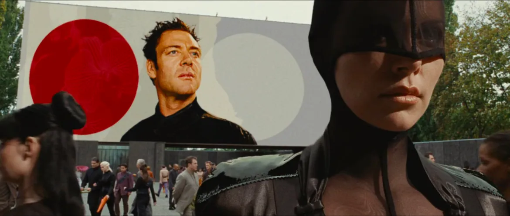
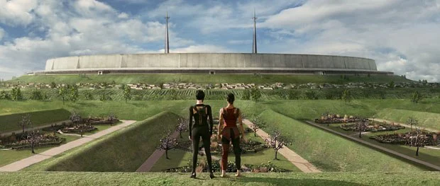
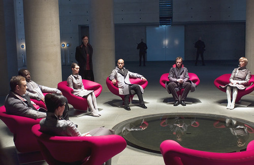

Æon Flux es una película de ciencia ficción distópica estrenada en el año 2005, basada en la serie animada creada por Peter Chung y emitida por MTV en los años 90.
Su universo combina estética biopunk, crítica social, filosofía política y una fuerte carga visual, construyendo un mundo frío, estilizado y artificial, donde la humanidad sobrevive bajo una ilusión de orden y estabilidad.
En un futuro distante, una plaga global ha exterminado casi por completo a la humanidad.
Los pocos sobrevivientes se refugian en Bregna, una ciudad amurallada gobernada por la poderosa familia Goodchild, que controla todos los aspectos de la vida mediante un sistema jerárquico, tecnológico y altamente vigilado.
En este contexto surge Æon Flux, una agente de élite perteneciente a la resistencia clandestina conocida como los Monicans.
Su misión: infiltrarse en el núcleo del poder y asesinar a Trevor Goodchild, el líder visible del régimen.
Lo que comienza como una operación militar se transforma rápidamente en una travesía personal y filosófica, donde Æon descubre secretos ocultos sobre el origen de la ciudad, la verdadera historia de la plaga y su propio rol dentro del sistema.
Su viaje no solo desafía al régimen, sino que también cuestiona la naturaleza de la humanidad, la identidad, el control genético y el libre albedrío.
Contexto y tono de la obra
Æon Flux se posiciona como una obra híbrida entre el cine de acción y la ciencia ficción filosófica.
A diferencia de la serie animada original que se destacaba por su narrativa fragmentada, experimental y simbólica— la película de acción real adopta una estructura más lineal, aunque mantiene múltiples capas de significado.
El tono general es frío, elegante y melancólico, transmitiendo una sensación constante de control y vigilancia, donde los personajes viven en una sociedad aparentemente perfecta pero profundamente artificial.
El concepto central gira en torno a:
La manipulación genética
El control de las masas mediante tecnología y falsas promesas de estabilidad
La pérdida de la identidad individual
El conflicto entre libertad y seguridad absoluta

Estética visual y mundo narrativo
Uno de los aspectos más destacados de la película es su diseño visual.
Fue filmada en locaciones reales de arquitectura modernista en Berlín y Potsdam (Alemania), utilizando edificios con líneas minimalistas, formas geométricas puras y escenarios que parecen parte de una sociedad utópica pero sin alma.
Este entorno refuerza la sensación de una ciudad:
Demasiado limpia
Demasiado ordenada
Demasiado perfecta para ser real
La estética se apoya en tonos fríos, superficies metálicas, minimalismo extremo y tecnología integrada a los cuerpos y entornos, lo que conecta directamente con la corriente biopunk y ciberpunk.

Interpretación simbólica
Más allá de la acción y los elementos futuristas, Æon Flux también puede interpretarse como una metáfora sobre:
Los peligros del control absoluto
La manipulación biotecnológica
La pérdida del libre albedrío en sociedades hiperorganizadas
La repetición cíclica de errores humanos bajo estructuras de poder
Æon no solo es una combatiente, sino un símbolo de resistencia contra sistemas cerrados que buscan eliminar la imperfección a cambio de libertad.

Impacto cultural
Aunque en su estreno no fue un éxito comercial masivo, Æon Flux ha logrado con los años convertirse en una película de culto dentro del género de ciencia ficción distópica, especialmente valorada por su estética y su universo conceptual.
Su influencia se puede encontrar en videojuegos, arte digital, diseño de moda futurista y narrativas visuales contemporáneas que exploran mundos controlados, identidades fragmentadas y tecnología invasiva.